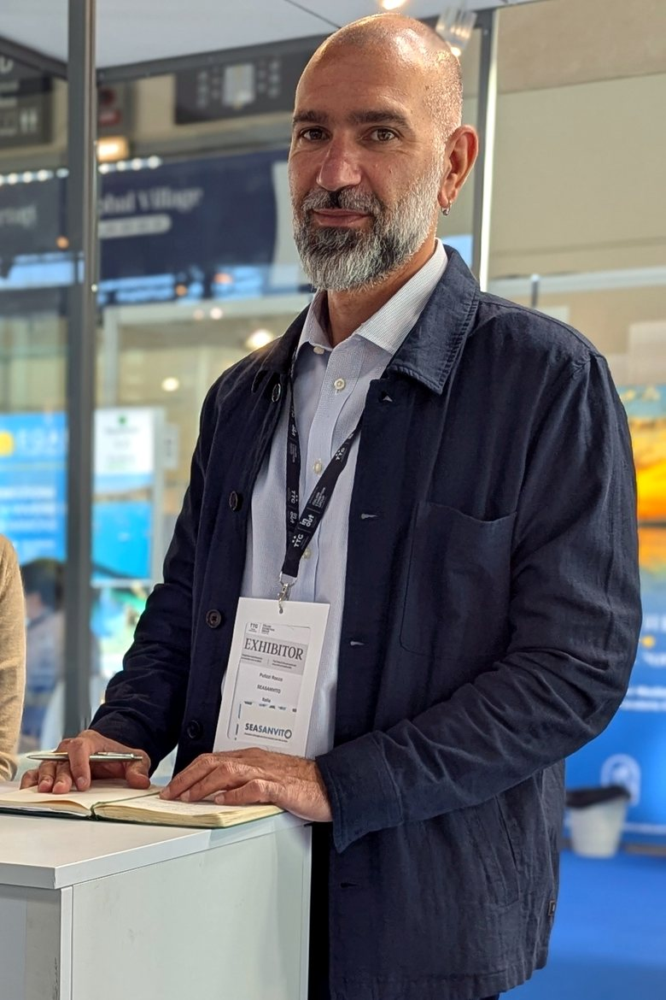

Far crescere un’impresa senza consumare i luoghi e le persone che la rendono possibile.
Consulenza e formazione per imprese ricettive e realtà del territorio: un metodo di lavoro solido, dalla vendita all’organizzazione fino ai numeri, con il rigore di chi proviene dalla ricerca.
Il primo colloquio conoscitivo è gratuito.
Rocco Pulizzi Imprenditore, consulente, formatore
Servizi
Tre modi di lavorare insieme, un unico metodo.
-
Consulenza per lo sviluppo aziendale
Guardiamo insieme come vendi, come è organizzato il lavoro e cosa raccontano i tuoi numeri. Poi costruiamo processi chiari, dalla vendita all’organizzazione interna, che il tuo team può portare avanti nel tempo. L’obiettivo è una crescita sostenibile: economica, sociale e ambientale.
-
Formazione: dalla vendita all’intelligenza artificiale
Percorsi pratici per le persone che lavorano con te: vendita e rapporto con il cliente, reputazione online, strumenti digitali e intelligenza artificiale, che uso ogni giorno e insegno anche nelle scuole. Sull’IA: usarla bene nel lavoro quotidiano e verificarne sempre i risultati. Rendo semplici concetti complessi, perché ciò che si impara in aula si applichi già il giorno dopo.
-
Analisi dati
Ricavi, costi, prenotazioni, canali di vendita: trasformo i dati che già possiedi in pochi indicatori leggibili. Così le decisioni non si basano più su sensazioni, ma su una fotografia chiara di dove sei e di dove stai andando.
Come lavoro
Un percorso per fasi, con le tue persone coinvolte dall’inizio alla fine.
-
Ascolto e analisi
Partiamo dalla situazione reale: come vendi, come lavora il tuo team, quali dati hai già a disposizione.
-
Mercato e obiettivi
Studiamo il tuo mercato e i tuoi clienti, per allineare ogni scelta a una visione di sviluppo chiara.
-
Processi e strumenti
Definiamo i processi di vendita e impostiamo strumenti semplici, compresa l’intelligenza artificiale, per raccogliere dati e automatizzare ciò che si ripete.
-
Misura e miglioramento
Verifichiamo i risultati sui numeri, affiniamo i processi e miglioriamo i ricavi nel tempo.
In ogni fase
Formazione e affiancamento delle persone, con un confronto costante e documentato. L’obiettivo è che il metodo resti alla tua azienda.
Una rete di persone
Dietro il metodo ci sono anche le relazioni: collaborazioni costruite in vent’anni tra ricerca e impresa. Il dialogo tra competenze diverse è una risorsa che metto a disposizione della tua azienda.
Nessuna formula magica: certezze operative, costruite passo dopo passo.
Il primo colloquio conoscitivo è gratuito.
Il metodo, messo alla prova
«Finché non hai detto un numero, sei nel campo delle opinioni.»
Il metodo
Vengo dalla ricerca scientifica: ingegneria biomedica, poi un dottorato in neuroscienze. Da quel mondo ho portato con me un’abitudine che applico a ogni decisione d’impresa: osservare, misurare, verificare prima di agire. E rendere semplice ciò che è complesso, perché un metodo funziona solo se tutti lo capiscono.
Seasanvito, il laboratorio
Il primo banco di prova è Seasanvito, l’azienda turistico-ricettiva che guido come manager a San Vito Lo Capo. Lì il metodo è diventato scelte concrete: un apart-hotel per famiglie, un eco-hotel riservato agli adulti, scelta ancora rara sul territorio, case vacanza e suite, la sostenibilità ambientale, sociale e nel lavoro, la digitalizzazione dei processi e, oggi, l’intelligenza artificiale.

Chi sono
Siciliano, studente fuori sede a Pisa, poi ricercatore ad Anversa. Quindi la scelta di tornare a casa, a San Vito Lo Capo, per gestire l’azienda di famiglia con mia moglie. Un percorso non lineare, tenuto insieme da un filo: il metodo.
Scopri il mio percorso →Contatti
Parliamone
Raccontami la tua azienda e che cosa vorresti migliorare. Il primo colloquio conoscitivo è gratuito e senza impegno: serve a capire insieme se, e come, posso esserti utile.
San Vito Lo Capo (TP) · Lavoro in presenza e da remoto.
- Email info@roccopulizzi.it
- Telefono +39 328 650 4110
- WhatsApp +39 328 650 4110